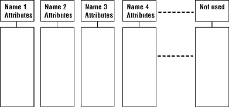
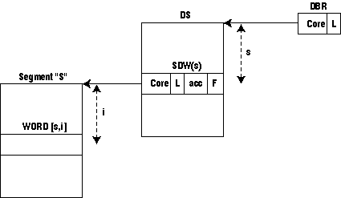
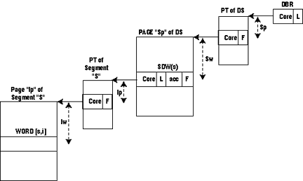
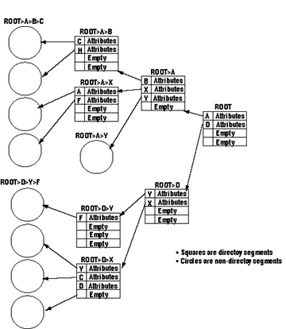
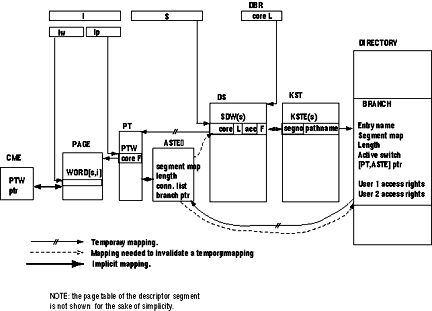
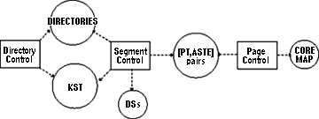

The Multics Virtual Memory: Concepts and Design
Abstract
As experience with use of on-line operating systems has grown, the need to share information among system users has become increasingly apparent. Many contemporary systems permit some degree of sharing. Usually, sharing is accomplished by allowing several users to share data via input and output of information stored in files kept in secondary storage. Through the use of segmentation, however, Multics provides direct hardware addressing by user and system programs of all information, independent of its physical storage location. Information is stored in segments each of which is potentially sharable and carries its own independent attributes of size and access privilege.
Here, the design and implementation considerations of segmentation and sharing in Multics are first discussed under the assumption that all information resides in a large, segmented main memory. Since the size of main memory on contemporary systems is rather limited, it is then shown how the Multics software achieves the effect of a large segmented main memory through the use of the Honeywell 645 segmentation and paging hardware.
Key Words and Phrases: operating system, Multics, virtual memory, segmentation, information sharing, paging, memory management, memory hierarchy
CR Categories: 4.30, 4.31, 4.32
1. Introduction
In the past few years several well-known systems have implemented large virtual memories which permit the execution of programs exceeding the size of available core memory. These implementations have been achieved by demand paging in the Atlas computer [11], allowing a program to be divided physically into pages only some of which need reside in core storage at any one time, by segmentation in the B5000 computer [15], allowing a program to be divided logically into segments, only some of which need be in core, and by a combination of both segmentation and paging in the Honeywell 645 [3, 12] and the IBM 360/67 [2] for which only a few pages of a few segments need be available in core while a program is running.
As experience has been gained with remote-access, multiprogrammed systems, however, it has become apparent that, in addition to being able to take advantage of the direct addressability of large amounts of information made possible by large virtual memories, many applications also require the rapid but controlled sharing of information stored on-line at the central facility. In Multics (Multiplexed Information and Computing Service) segmentation provides a generalized basis for the direct accessing and sharing of on line information by satisfying two design goals: (1) it must be possible for all on-line information stored in the system to be addressed directly by a processor and hence referenced directly by any computation; (2) it must be possible to control access, at each reference, to all on-line information in the system.
The fundamental advantage of direct addressability is that information copying is no longer mandatory. Since all instructions and data items in the system are processor-addressable, duplication of procedures and data is unnecessary. This means, for example, that core images of programs need not be prepared by loading and binding together copies of procedures before execution; instead, the original procedures may be used directly in a computation. Also, partial copies of data files need not be read, via requests to an I/O system, into core buffers for subsequent use and then returned, by means of another I/O request, to their original locations; instead the central processor executing a computation can directly address just those required data items in the original version of the file. This kind of access to information promises a very attractive reduction in program complexity for the programmer.
If all on-line information in the system may be addressed directly by any computation, it becomes imperative to be able to limit or control access to this information both for the self-protection of a computation from its own mishaps, and for the mutual protection of computations using the same system hardware facilities. Thus it becomes desirable to compartmentalize or package all information in a directly-addressable memory and to attach access attributes to these in formation packages describing the fashion in which each user may reference the contained data and procedures. Since all such information is processor addressable, the access attributes of the referencing user must be enforced upon each processor reference to any information package.
Given the ability to directly address all on-line information in the system, thereby eliminating the need for copying data and procedures, and given the ability to control access to this information, controlled sharing among several computations then follows as a natural consequence.
In Multics, segments are packages of information which are directly addressed and which are accessed in a controlled fashion. Associated with each segment is a set of access attributes for each user who may access the segment. These attributes are checked by hardware upon each segment reference by any user. Furthermore, all on-line information in a Multics installation can be directly referenced as segments while in other systems most on-line information is referenced as files.
This paper discusses the properties of an "idealized" Multics memory comprised entirely of segments referenced by symbolic name, and describes the simulation of this idealized memory through the use of both specialized hardware and system software. The result of this simulation is referred to as the Multics virtual memory. Although the Multics virtual memory has been discussed elsewhere [3, 6, 7] at the conceptual level or in its earlier forms, the implementation presented here represents a mechanism resulting from several consecutive implementations leading to a effective realization of the design goals.
2. Segmentation
A basic motivation behind segmentation is the desire to permit information sharing in a more automatic and general manner than provided by non-segmented systems. Sharing must be accomplished without duplication of information and access to the shared information must be controlled not only in secondary memory but also in main memory.
In most existing systems that provide for information sharing, the two requirements mentioned above are not met. For example, in the CTSS system [5], information to be shared is contained in files. In order for several users to access the information recorded in a file, a copy of the desired information is placed in a buffer in each user's core image. This requires an explicit, programmer-controlled I/O request to the file system, at which time the file system checks whether the user has appropriate access to the file. During execution, the user program manipulates this copy and not the file. Any modification or updating is done or the copy and can be reflected in the original file only b an explicit I/O request to the file system, at which time the file system determines whether the user has the right to change the file.
In nonsegmented systems, the use of core images makes it nearly impossible to control access to shared information in core. Each program in execution is assigned a logically contiguous, bounded portion of core memory or paged virtual memory. Even if the nontrivial problem of addressing the shared information in core were solved, access to this information could not be controlled without additional hardware assistance. Each core image consists of a succession of anonymous words that cannot be decomposed into the original elementary parts from which the core image was synthesized. These different parts are indistinguishable in the core image; they have lost their identity and thereby have lost all their attributes, such as length, access rights, and name. As a consequence, nonsegmented hardware is inadequate for controlled sharing in core memory. Although attempts to share information in core memory have been made with nonsegmented hardware, they have resulted in each instance being a special case which must be preplanned at the supervisory level. For example, if all users are to share a compiler in main memory, it is imperative that none of them be able to alter the part of main memory where the compiler resides. The hardware "privileged" mode used by the supervisor is often the only means of protecting shared information in main memory. In order to protect the shared compiler, it is made accessible only in this privileged mode. The compiler can no longer be regarded as a user procedure; it has to be accessed through a supervisor call like any other part of the supervisor, and must be coded to respect any conventions which may have been established for the supervisor.
In segmented systems, hardware segmentation can be used to divide a core image into several parts, or segments [10]. Each segment is accessed by the hardware through a segment descriptor containing the segment's attributes. Among these attributes are access rights that the hardware interprets on each program reference to the segment for a specific user. The absolute core location of the beginning of a segment and its length are also attributes interpreted by the hardware at each reference, allowing the segment to be relocated any where in core and to grow and shrink independently of other segments. As a result of hardware checking of access rights, protection of a shared compiler, for example, becomes trivial since the compiler can reside in a segment with only the "execute" attribute, thus permitting users to execute the compiler but not to change it.
In most segmented systems, a user program must first call the supervisor to associate a segment descriptor with a specific file before the program can directly access the information in the file. If the number of files the user program must reference exceeds the number of segment descriptors available to the user, the user program is forced to call the supervisor again to free segment descriptors currently in use so that they can be reused to access other information. Furthermore, if the number of segment descriptors is insufficient to provide simultaneous direct access to each distinct file required by this program, the user must then provide for some means of buffering this information. Buffering, of course, requires that information from more than one file be copied and coalesced with other distinctly different information having potentially different attributes. Once the information is copied and merged, the identity of the original information is lost, thus making it impossible for the information to be shared with other user programs. In addition, this form of user controlled segment descriptor allocation and buffering of information requires a significant amount of pre-planning by the user.
In Multics, the number of segment descriptors available to each computation is sufficiently large to provide a segment descriptor for each file that the user program needs to reference in most applications. The availability of a large number of segment descriptors to each computation makes it practical for the Multics supervisor to associate segment descriptors with files upon first reference to the information by a user pro gram, relieving the user from the responsibility of allocating and deallocating segment descriptors. In addition, the relatively large number of segment descriptors eliminates the need for buffering, allowing the user program to operate directly on the original information rather than on a copy of the information. In this way, all information retains its identity and independent attributes of length and access privilege regardless of its physical location in main memory or on secondary storage. As a result, the Multics user no longer uses files; instead he references all information as segments, which are directly accessible to his programs.
To Multics users, all memory appears to be composed of a large number of independent linear core memories, each associated with a descriptor. A user program can create a segment by issuing a call to the supervisor, giving, as arguments, the appropriate attributes such as symbolic segment name, name of each user allowed to access the segment with his respective access rights, etc. The supervisor then finds an unused descriptor where it stores the segment attributes. The segment having been created, the user program can now address any word of the corresponding linear memory by the pair (name, i) where "name" is the symbolic name of the segment and "i" is the word number in the linear memory. Furthermore, any other user can reference word number i of this segment also by the pair (name, i) but he can access it only according to the access rights he was given by the creator and which are recorded in the descriptor. Combinations of the "read," "write," "execute" and "append" access rights [6] are available in Multics.
A simple representation of this memory, referred to as the Multics idealized memory, is shown in Figure 1.

Figure 1. Multics idealized memory.
3. Paging
In a system in which the maximum size of any segment was very small compared to the size of the entire core memory, the "swapping" of complete segments into and out of core would be feasible. Even in such a system, if all segments did not have the same maximum size, or had the same maximum size but were allowed to grow from initially smaller sizes, there remains the difficult core management problem of providing space for segments of different sizes. Multics, however, provides for segments of sufficient maximum size so that only a few can be entirely core-resident at any one time. Also, these segments can grow from any initial size smaller than the maximum permissible size.
By breaking segments into equal-size parts called pages and providing for the transportation of individual pages to and from core as demand dictates, the disadvantages of fragmentation are incurred, as explained by Denning [9]. However, several practical problems encountered in the implementation of a segmented virtual memory are solved.
First, since pages are all of equal size, space allocation is immensely simplified. The problems of "compacting" information in core and on secondary storage, characteristic of systems dealing with variable-sized segments or pages, are thereby eliminated.
Second, since only the referenced page of a segment need be in core at any one instant, segments need not be small compared to core memory.
Third, "demand paging" permits advantage to be taken of any locality of reference peculiar to a program by transporting to core only those pages of segments which are currently needed. Any additional overhead associated with demand paging should of course be weighed against the alternative inefficiencies associated with dedicating core to entire segments which must be swapped into core but which may be only partly referenced.
Finally, demand paging allows the user a greater degree of machine independence in that a large program designed to run well in a large core memory configuration will continue to run at reduced performance on smaller configurations.
4. The Multics Virtual Memory
Multics simulates the idealized memory, represented in Figure 1, using the segmentation and paging features of the 645 assisted by the appropriate software features. The result of the simulation is referred to as the "Multics Virtual Memory." The user can keep a large number of segments in this memory and reference them by symbolic name; upon first reference to a segment, the supervisor automatically transforms the symbolic name into the appropriate hardware address which is directly used by the processor for subsequent references.
The remainder of this paper explains the addressing mechanism in the 645 and describes how the Multics supervisor simulates the Multics idealized memory.
5. The Honeywell 645 Processor
The features of the 645 processor which are of interest for the implementation of the Multics virtual memory are segmentation and paging.
5.1 Segmentation
Any address in the 645 processor consists of a pair of integers [s, i]. "s" is called the segment number; "i" the index within the segment. The range of "s" and "i" is 0 to 2**18- 1. Word [s, i] is accessed through a hardware register which is the sth word in a table called a descriptor segment (DS). The descriptor segment is in core memory and its absolute address is recorded in a processor register called a descriptor base register (DBR). Each word of the DS is called a segment descriptor word (SDW); the sth SDW will be referred to as SDW(s). See Figure 2.
The DBR contains the values:
- DBR * core which is the absolute core address of the DS.
- DBR * L which is the length of the DS.
- SDW(s) * core which is the absolute core address of the segment s.
- SDW(s) * L which is the length of the segment s.
- SDW(s) * acc which describes the access rights for the segment.
- SDW(s) * F which is the "missing segment" switch.
- If DBR * L < s, generate a trap, or "fault" to the supervisor.
- Access SDW(S) at absolute location DBR * core + s.
- If SDW(S) * F = ON, generate a missing segment fault.
- If SDW(S) L < i, generate a fault.
- If SDW(S) * acc is incompatible with the requested operation, generate a fault.
- Access the word whose absolute address is SDW(s) * core + i.

Figure 2. Hardware segmentation in the Honeywell 645.
5.2 Paging
The above description assumes that segments are not paged; in fact, paging is implemented in the 645 hardware. In the Multics implementation, all segments are paged and the page size is always 1,024 words.
Element "i" of a segment is the wth word of the pth page of the segment, "w" and "p" being defined by
w = i mod 1,024p = (i-w)/1,024
Each segment is referenced by a processor through a page table (PT). The PT of a segment is an array of physically contiguous words in core memory. Each element of this array is called a page table word (PTW). Page table word number p contains:
- PTW(p) * core which is the absolute core address of page number p.
- PTW(p) * F which is the "missing page" switch.
The meaning of DBR * core and SDW(s) * core is now:
- DBR * core = Absolute core address of the PT of the descriptor segment.
- SDW(s) * core = Absolute core address of the PT of segment number s.
A simplified version of the algorithm used by the processor to access the word whose address is [s, i] is as follows (see Figure 3):
- If DBR * L < s, generate a fault.
- Split s into the page number sp and word number sw .
-
Access PTW(sp) at absolute location
- DBR core + sp.
- If PTW(sp)*F = ON, generate a missing page fault.
-
Access SDW(s) at absolute location
- PTW(sp) * core + sw
- If SDW(s) * F = ON, generate a missing segment fault.
- If SDW(S) * L < i, generate a fault.
- If SDW(S) * acc is incompatible with the requested operation, generate a fault.
- Split i into the page number ip and word number iw .
-
Access PTW(ip) at absolute location
- SDW(s) * core + ip.
- If PTW(ip) * F = ON, generate a missing page fault.
-
Access the word whose absolute location is
- PTW(ip) * core + iw.
In order to reduce the number of processor references to core storage while performing this algorithm, each processor has a small, high-speed associative memory [12] automatically maintained so as to always contain the PTWs and SDWs most recently used by the processor. The associative memory significantly reduces the number of additional memory requests required during address preparations.

Figure 3. Hardware segmentation and paging in the Honeywell 645.
6. Multics Processes and the Multics Supervisor
A process is generally understood as being a program in execution. A process is characterized by its state word defining, at any given instant, the history resulting from the execution of the program. It is also characterized by its address space. The address space of a process is the set of processor addresses that the process can use to reference information in memory. In Multics, any information that a process can reference by an address of the form (segment number, word number) is said to be in the address space of the process. There is a one-to-one correspondence between Multics processes and address spaces. Each process is provided with a private descriptor segment which maps segment numbers into core memory addresses and with a private table which maps symbolic segment names into segment numbers. This table is called the Known Segment Table (KST).
The Multics supervisor could have been written so as not to use segment addressing of course; but organizing the supervisor into procedures and data segments permits one to use, in the supervisor, the same conventions that are used in user programs. For instance, the call-save-return conventions [7] made for user programs can be used by the supervisor; the standard way to manufacture pure procedures in a user program is also used extensively in the supervisor. A less visible advantage of segmentation of the supervisor is that some supervisory facilities provided for the management of user segments can also be applied to supervisor segments; for example, the demand paging facility designed to automatically load pages of user segments can also be used to load pages of supervisor segments. As a result, a large portion of the supervisor need not reside permanently in core.
Unlike most supervisors, the Multics supervisor does not operate in a dedicated process or address space. Instead, the supervisor procedure and data segments are shared among all Multics processes. Whenever a new process is created, its descriptor segment is initialized with descriptors for all supervisor segments allowing the process to perform all of the basic supervisory functions for itself. The execution of the super visor in the address space of each process facilitates communication between user procedures and supervisor procedures. For example, the user can call a supervisor procedure as if he were calling a normal user procedure. Also, the sharing of the Multics supervisor facilitates simultaneous execution, by several processes, of supervisory functions, just as the sharing of user procedures facilitates the simultaneous execution of functions written by users.
Since supervisor segments are in the address space of each process, they must be protected against unauthorized references by user programs. Multics provides the user with a ring protection mechanism [13] which segregates the segments in his address space into several sets with different access privileges. The Multics supervisor takes advantage of the existence of this mechanism and uses it, rather than some other special mechanism to protect itself.
7. Segment Attributes
7.1 Directory Hierarchy
The name of a segment and its attributes are associated in a catalogue. Conceptually this catalogue consists of a table with one entry for each segment in the system. An entry contains the name of the segment and all its attributes: length, memory address, list of users allowed to use the segment with their respective access rights, date and time the segment was created, etc.
In Multics, this catalogue is implemented as several segments, called directories, organized into a tree structure. A segment name is a list of subnames reflecting the position of the entry in the tree structure, with respect to the beginning, or root directory (ROOT) of the tree. By convention, subnames are separated by the character ">". Each subname is called an entryname and the list of entrynames is called a pathname. An entryname is unique in a given directory and a pathname is unique in the entire directory hierarchy. Be cause of its property of uniquely identifying a segment in the directory hierarchy, the pathname has been chosen as the symbolic name by which the Multics user must reference a segment. There are two types of directory entries, branches and links. A branch is a directory entry which contains all attributes of a segment while a link is a directory entry which contains the pathname of another directory entry. A more detailed description of the directory hierarchy and of the use of links is given by Daley and Neumann [6].
7.2 Operations on Segment Attributes
Supervisor primitives perform all operations on segment attributes. There is a set of primitives available to the user which allow him, for example, to create a segment, delete a segment, change the entryname of a directory entry, change the access rights of a segment, list the segment attributes contained in a directory, etc.
Creating a segment whose pathname is ROOT > A > B > C (see Figure 4) consists basically of the following steps:
- Check that entryname C does not already exist in the directory ROOT > A > B.
- Allocate space for a new branch in directory ROOT > A > s.
-
Store in the branch the following items:
- The entry name C.
- The segment length, initialized to zero.
- The access list, given by the creator.
- The segment map, consisting of an array of secondary memory addresses, one for each page of the segment. The maximum length of a segment in Multics being 64 pages, the segment map for any segment contains 64 entries. Since the segment length is still zero, each entry of the segment map is initialized with a "null" address, showing that no secondary memory has been assigned to any potential page of the segment.
- The segment status "inactive," meaning that there is no page table for this segment. The segment status, which may be either "active" or "inactive" is indicated by the active switch.

Figure 4. Directory hierarchy.
8. Segment Accessing
Although the creation of a segment initializes its attributes, additional supervisor support is required to make the segment accessible to the processor when a user program references the segment by symbolic name.
8.1 Symbolic Addressing Conventions
The pathname is the only symbolic name by which a segment can be uniquely identified in the directory hierarchy. However, for user convenience, the system provides a facility whereby a user can reference a segment from his program using only the last entryname of the segment's pathname and supplying the rest of the pathname according to system conventions. This last entry name is called the reference name.
When a process executes an instruction which attempts to access a segment by means of its reference name, the Multics dynamic linking facility [71 is automatically invoked. The dynamic linker determines the missing part of the pathname according to the above mentioned system conventions. These conventions are called search rules and may be regarded as a list of directories to be searched for an entryname matching the specified reference name. When this entryname is found in a directory, the directory pathname is prefixed to the reference name yielding the required pathname. The dynamic linker, using the "Make Known" module (Section 8.2), then obtains a segment number by which the referenced segment will be accessed. Finally it transforms the reference name into this segment number so that all subsequent executions of the instruction in this process access the segment directly by segment number. Further details are given by Daley and Dennis [7].
8.2 Making a Segment Known to a Process
Each time a segment is referenced in a process by its pathname, either explicitly or as the result of the evaluation of a reference name by the dynamic linking facility, the pathname must be translated into a segment number in order to permit the processor to address the segment for this process. This translation is done by the super visor using the KST associated with the process. The KST is an array organized such that entry number "s", KSTE(s), contains the pathname associated with segment number "s". See Figure 5.
If the association (pathname, segment number) is found in the KST of the process, the segment is said to be known to the process and the segment number can be used to reference the segment.
If the association (pathname, segment number) is not found in the KST, this is the first reference to the segment in the process and the segment must be made known. A segment is made known by assigning an unused segment number "s" in the process and by recording the pathname in KSTE(s) to establish the pair (pathname, segment number) in the KST of the process. The directory hierarchy is also searched for this path name and a pointer to the corresponding branch is entered in KSTE(s) for later use (Section 8.3.).

Figure 5. Basic tables used to implement the Multics virtual memory.
The per-process association of pathname and segment number is used in the Multics system because it is impossible to assign a unique segment number to each segment. The reason is that the number of segments in the system will nearly always be larger than the number of segment numbers available in the processor.
When a segment is made known to a process by segment number "s," its attributes are not placed in SDW(s) of the descriptor segment of that process. SDW(s) having been initialized with the missing segment switch ON, the first reference in this process to that segment by segment number "s" will cause the processor to generate a trap. In Multics this trap is called a "missing segment fault" and transfers control to a supervisor module called the segment fault handler.
8.3 The Segment Fault Handler
When a missing segment fault occurs, control is passed to the segment fault handler to store the proper segment attributes in the appropriate SDW and set the missing segment switch OFF in the SDW.
These attributes, as shown in Figure 3, consist of the page table address, the length of the segment, and the access rights of the user with respect to the segment. The information initially available to the supervisor upon occurrence of a missing segment fault is the segment number "s".
The only place where the needed attributes can be found is in the branch of the segment. Using the segment number "s", the supervisor can locate the KST entry associated with the faulting segment; it can then find the required branch since a pointer to the branch has been stored in the KST entry when the segment was made known to this process (Section 8.2).
Using the active switch (Figure 5) in the branch, the supervisor determines whether there is a page table for this segment. Recall that this switch was initialized in the branch at segment creation time. If there is no page table, one must be constructed. A portion of core memory is permanently reserved for page tables. All page tables are of the same length and the number of page tables is determined at system initialization.
The supervisor divides page tables into two lists: the used list and the free list. Manufacturing a page table (PT) for a segment could consist only of selecting a PT from the free list, putting its absolute address in the branch and moving it from the free to the used list. If this were actually done, however, the servicing of each missing page fault would require access to a branch since the segment map containing secondary storage addresses is kept there (Figure 5). Since it is impractical for all directories to permanently reside in core, page fault handling could thereby require a secondary storage access in addition to the read request required to transport the page itself into core. Although this mechanism works, efficiency considerations have led to the "activation" convention between the segment fault handler and the page fault handler.
Activation. A portion of core memory is permanently reserved for recording attributes needed by the page fault handler, i.e. the segment map and the segment length. This portion of core is referred to as the active segment table (AST). There is only one AST in the system and it is shared by all processes. The AST contains one entry (ASTE) for each PT. A PT is always associated with an ASTE, the address of one implying the address of the other. They may be regarded as a single entity and will be referred to as the (PT, ASTE) of a segment. The used list and free list mentioned above are referred to as the (PT, ASTE) free list and the (PT, ASTE) used list.
A segment which has a (PT, ASTE) is said to be active. Being active or not active is an attribute of the segment and is recorded in the branch using the active switch.
When the active switch is ON, both the segment map and the segment length are no longer in the branch but are to be found in the segment's (PT, ASTE) whose address was recorded in the branch during "activation" of the segment.
To activate a segment, the supervisor must:
- Find a free (PT, ASTE). (Assume temporarily that at least one is available).
- Move the segment map and the segment length from the branch into the ASTE,
- Set the active switch ON in the branch.
- Record the pointer to (PT, ASTE) in the branch.
By pairing an ASTE with a PT in core, the segment fault handler has guaranteed that all segment attributes needed by the page fault handler are core-resident, permitting more efficient page fault servicing.
Connection. Once the segment is active, the corresponding SDW must be "connected" to the segment. To connect the SDW to the segment the supervisor must:
- Get the absolute address of the PT, using the (PT, ASTE) pointer kept in the branch, and store it in SDW.
- Get the segment length from the ASTE and store it in the SDW.
- Get the access rights for the user from the branch and store them in the SDW.
- Turn off the missing segment switch in the SDW.
Having defined activation and connection, segment fault handling can now be summarized as:
- Use the segment number s to access the KST entry.
- Use the KST entry to locate the branch.
- If the active switch in the branch is OFF, activate the segment.
- Connect the SDW.
Note that the active switch and the (PT, ASTE) pointer in the segment branch "automatically" guarantee segment sharing in core since all SDWs describing a given segment will point to the same PT.
Once the segment and its SDW have been connected, the hardware can access the appropriate page table word. If the page is not in core, a missing page fault occurs, transferring control to the supervisor module called the page fault handler.
8.4 The Page Fault Handler
When a page fault occurs the page fault handler is given control with the PT address and the page number of the faulting page. The information needed to bring the page into core memory is the address of a free block of core memory into which the page can be moved and the address of the page in secondary memory. The term page frame is also used to denote a block of core memory which holds a page of information [9].
A free block of core must be found. This is done by using a data base called the core map. The core map is an array of elements called core map entries (CME). The nth entry contains information about the nth block of core (the size of all blocks is 1,024 words). The supervisor divides this core map into two lists; the core map used list and the core map free list.
The job of the page fault handler consists of the following steps:
- Find a free block of core and remove its core map entry from the free list. (Assume temporarily that the free list is not empty.)
- Access the ASTE associated with the PT and find the address in secondary memory of the missing page.
- If this address is a "null" address, initialize the block of core with zeros and update the segment length in the ASTE; this action is only taken the first time the page is referenced since the segment was created and provides for the automatic growing of segments. Other wise issue an I/O request to move the page from secondary memory into the free block of core and wait for completion of the request via a call to the "traffic controller" [14] which is responsible for processor multiplexing.
- Store the core address in the PTW, remove the fault from the PTW, and place the core map entry in the used list.
8.5 Page Multiplexing
There are many more pages in virtual memory than there are blocks of core in the real memory; therefore, these blocks must be multiplexed among all pages. In the description of page fault handling it was assumed that a free block of core was always available. In order to insure that this is nearly always true, the page fault handler, upon removing a free block from the core map free list, examines the number of remaining free list entries; if this number is less than a preset minimum value, a page removal mechanism is invoked a sufficient number of times to ensure a nonempty core map free list in all but the most unusual cases. A nonempty core map free list eliminates waiting for page removal during the handling of a missing page fault.
To get a free block of core, the page removal mechanism may have to move a page from core to secondary memory. This requires: (a) an algorithm to select a page to be removed; (b) the address of the PTW which holds the address of the selected page, in order to set a fault in it; and (c) a place to put the page in secondary memory.
The selection algorithm is based upon page usage. It is a particularly easy-to-implement version [41 of the "least-recently-used" algorithm [1, 8]. The hardware provides valuable assistance by, each time a page is referenced, setting ON a bit, called the used bit, in the corresponding PTW. The selection algorithm will not be described in detail here. However, it should be noted that candidates for removal are those pages described in the core map used list; therefore, each core map entry which appears in the used list must contain a pointer to the associated PTW (Figure 5) in order to permit examination of the used bit. The action of storing the PTW pointer in the core map entry must be added to the list of actions taken by the page fault handler when a page is moved into core (Section 8.4.).
Once the supervisor has selected the page to be removed, it takes the following steps:
- Set the missing page switch ON in the PTW.
- If no secondary memory has been assigned yet for this page, i.e. the segment map entry for this page holds a "null" address, assign a block of secondary memory and store its address in the segment map entry.
- Issue an I/O request to move the page to secondary storage.
- Upon completion of the I/O request, move the core map entry describing the freed block of core from the core map used list to the core map free list. This may be done in another process upon noticing the completion of the I/O request.
8.6 (PT, ASTE) Multiplexing
Core blocks can be multiplexed only among pages of active segments. The number of concurrently active segments is limited to the number of (PT, ASTE) pairs, which is, by far, smaller than the total number of segments in the virtual memory. Therefore (PT, ASTE) pairs must be multiplexed among all segments in the virtual memory.

Figure 6. Supervisor functional modules and data bases.
When segment activation was described, a (PT, ASTE) pair was assumed available for assignment. In fact, this is not always the case. Making one segment active may imply making another segment inactive, thereby disassociating this other segment from its (PT, ASTE). Since all processes sharing the same segment will have the address of the PT in an SDW, it is essential to invalidate this address in all SDWs containing it before removing the page table.
This operation requires: (a) an algorithm to select a segment to be deactivated; (b) knowing all SDWs that contain the address of the page table of the selected segment, in order to invalidate this address; (c) moving the attributes contained in the ASTE back to the branch; and (d) changing the status of the segment from active to inactive in the branch.
The selection algorithm for deactivation, like the selection algorithm for page removal, is based on usage. When the last page of a segment is removed from core, the segment becomes a candidate for deactivation. The algorithm selects for deactivation the segment which has had no pages in core for the longest period of time, i.e. the segment which has been least recently used. Since the number of (PT, ASTE) pairs substantially exceeds the number of pageable blocks of core, it is always possible to find an active segment with no pages in core.
The ASTE must provide all the information needed for deactivating a segment. This means that during activation and connection, this information must be made available. During activation, a pointer to the branch must be placed in the ASTE; during connection, a pointer to the SDW must be placed in the ASTE. Since more than one SDW is connected to the same PT when the segment is shared by several processes, the super visor must maintain a list of pointers to all connected SDWs. This list is called a connection list. See Figure 5.
After the selection algorithm chooses a (PT, ASTE) to be freed, the disassociation of the segment from its (PT, ASTE) is done in two steps: disconnection and deactivation.
Disconnection consists of storing a segment fault in each SDW whose address appears in the connection list in the ASTE. Deactivation consists of moving the segment map and the segment length from the ASTE back to the branch, resetting the active switch in the branch, and putting the (PT, ASTE) in the free list.
9. Structure of the Supervisor
Up to now supervisor functions have been described, but not the supervisor structure. In this section, the different components of the supervisor are presented and the ability of portions of the supervisor to utilize the virtual memory is discussed.
9.l Functional Modules
Three functional modules can be identified in the supervisor described in Section 8; they are called directory control (DC), segment control (SC), and page control (PC).
DC performs all operations on segment attributes; it also maps pathnames into segment numbers in the KST of the executing process. Data bases used by a process executing DC procedures are the directories and the KST of the process (Figure 6).
SC performs segment fault handling. Data bases used by a process executing SC procedures are directories, the KST of the process, descriptor segments and (PT, ASTE) pairs.
PC performs page fault handling. Data bases used by a process executing PC procedures are (PT, ASTE) pairs and the core map.
9.2 Use of PC in the Supervisor
One can observe that the page fault handler need not know if a missing page belongs to a user segment or to a supervisor segment; it only expects to find the in formation it requires in the (PT, ASTE) of the segment to which the missing page belongs. Therefore, if all segments used in SC and DC are always active, then their pages need not be in core since PC can load them when they are referenced.
In order to make use of PC in the rest of the super visor the following (temporary) assumption must be made.
Assumption 1
(a) All segments used in PC are always in core and are connected to the descriptor segment of each process.
(b) All segments used in SC and DC are always active and are connected to the descriptor segment of each process.
9.3 Use of SC in the Supervisor
Assumption I is satisfactory in the Multics implementation except for directories.
The number of directory segments in the system may be very large and keeping them always active is not a realistic approach, since a large number of (PT, ASTE) pairs would have to be permanently assigned to them. It would be desirable to use SC to activate and connect directory segments only as needed.
A necessary condition for handling a segment fault for segment x in a process is that segment x be known to that process. Assuming that all directories are known to all processes, but not necessarily active, reference to a directory x may cause a segment fault. When handling this fault, the segment fault handler must reference the parent directory of segment x, where the branch for x is located. This reference to the parent of x could, in turn, cause a recursive invocation of the segment fault handler. These recursive invocations can propagate from directory to parent directory up to the root. If the root directory is always active and connected to each process, then the recursion is guaranteed to be finite and a segment fault for any directory can be handled.
The first assumption can be replaced by the following more satisfactory assumption (again temporary).
Assumption 2
(a) All segments used in PC are always in core and are connected to the descriptor segment of each process.
(b) All nondirectory segments used in SC and DC are always active and are connected to the descriptor segment of each process.
(c) The root directory is always active and connected to each process.
(d) All directories are always known to each process.
9.4 Use of the Make Known Facility in the Supervisor
However, it is unsatisfactory to keep all directories known to all processes because of the space that would be required in each KST. It would be more attractive if a directory could be made known to a process only when needed by the process.
Making a segment x known implies searching for its pathname in the KST. If not found, the parent of x must first be made known and so on up to the root. If the root directory is always known to all processes, then any directory can be made known to a process by calling recursively the Make Known facility of the supervisor.
Assumption 2 will now be replaced by the final assumption:
Final Assumption
(a) All segments used in PC are always in core and are connected to the descriptor segment of each process.
(b) All nondirectory segments used in SC and DC are always active and are connected to the descriptor segment of each process.
(c) The root directory is always active and connected to each process.
(d) The root directory is always known to each process.
Given the above assumption, supervisor segments, as well as user segments, can be stored in the virtual memory that the supervisor provides.
10. Summary
The most important points discussed in this paper are summarized below. They are grouped into two classes: the point of view of the user of the virtual memory, and the point of view of the supervisor itself.
User Point of View
The Multics virtual memory can contain a very large number of segments that are referenced by symbolic names.
Segment attributes are stored in special segments called directories, which are organized into a tree structure; by a naming convention known to the user, the symbolic name of a segment must be the pathname of the segment in the directory tree structure.
Any operation on directory segments must be done by calling the supervisor.
Any operation on a nondirectory segment can be done directly in accordance with the access rights that the user has for the segment; any word of any segment which resides in the virtual memory can be referenced with a pair (pathname, i) by the user.
Supervisor Point of View
The supervisor must simulate a large segmented memory which is directly addressable by symbolic name and such that any access to the memory is submitted to access rights checking.The supervisor maintains a directory tree where it stores all segment attributes. It can retrieve the attributes of a segment, given the pathname of that segment.
The supervisor itself is organized into segments and runs in the address space of each user process.
Any segment, be it a directory or a nondirectory segment, is identified by its pathname but can be accessed only using a segment number. For each segment name the supervisor must assign a segment number by which the processor will address the segment in the process.
The processor accesses a word of a segment through the appropriate SDW and PTW, subject to the access rights recorded in the SDW.
A segment fault is generated by the processor when ever the page table address or access rights are missing in the SDW. The supervisor then, using the KST entry as a stepping stone, accesses the branch where it finds the needed information. If a PT is to be assigned, the supervisor may have to deactivate another segment.
A page fault is generated by the processor whenever a PTW does not contain a core address. The supervisor then, using the ASTE associated with the PT, moves the missing page from secondary storage to core. This may require the removal of another page.
Acknowledgements
This paper would be incomplete without acknowledgment of the people who worked so hard to build the virtual memory supervisor portion of Multics. Special mention goes to G.F. Clancy, M.R. Thompson, and S.H. Webber who, under the design leadership of R.C. Daley, have been involved in a major portion of the design and implementation effort. They were aided in earlier designs and implementations by C.A. Cushing, S.M. Jones, G.B. Krekeler, N.I. Morris, P.G. Neumann, R.K. Rathbun, J.D. Van Hausen, M.R. Wagner, and L.D. Whitehead. Recent implementations have also benefited from the contributions of S.D. Dunten and M.C. Turnquist. Contributions in the form of analyses and discussions have been made by F.J. Corbató, E.L. Glaser, J.H. Saltzer, and V.A. Vyssotsky.
Finally, our thanks go to P.A. Belmont, M.A. Meer, and D.L. Stone, who participated in studies leading to this formalized description of the Multics virtual memory.
Received April 1970; revised July 1971
References
- Belady, L.A. A study of replacement algorithms for a virtual storage computer. IBM Systems J. 5, 2 (1966), 78 101.
- Comfort, W.T. A computing system design for user service. Proc. AFIPS 1965 FJCC, Vol. 27, Pt. I, Spartan Books, New York, pp. 619-628.
- Corbató, F.J., and Vyssotsky, V.A. Introduction and overview of the Multics system. Proc. AFIPS 1965 FJCC, Vol. 27, Pt. 1. Spartan Books, New York, pp. 185-196.
- Corbató, F.J. A paging experiment with the Multics system. Included in a Festschrift published in honor of Prof. P.M. Morse. MIT Press, Cambridge, Mass., 1969.
- Crisman, P.A. ed. The Compatible Time-Sharing System: A Programmer's Guide, 2nd Ed., MIT Press, Cambridge, Mass., 1965.
- Daley, R.C., and Neumann, P.G. A general-purpose file system for secondary storage. Proc. AFIPS 1965 FJCC, Vol. 27, Pt. 1. Spartan Books, New York, pp. 213-229.
- Daley, R.C., and Dennis, J.B. Virtual memory, processes, and sharing in Multics. Comm. ACM 11, 5 (May 1968), 306 312.
- Denning, P.J. The working set model for program behavior. Comm. ACM 11, 5 (May 1968), 323-333.
- Denning, P. J. Virtual memory. Computing Surveys 2, 3 (Sept. 1970), 153-189.
- Dennis, J.B. Segmentation and the design of multiprogrammed computer systems. J.ACM 12, 4 (Oct. 1965), 589-602.
- Fotheringham, J. Dynamic storage allocation in the Atlas computer, including an automatic use of a backing store. Comm. ACM 4, 10 (Oct. 1961), 435-436.
- Glaser, E.L., Couleur, J.F., and Oliver, G.A. System design of a computer for time sharing applications. Proc. AFIPS 1965, FJCC, Vol. 27, Pt. 1. Spartan Books, New York, pp. 197-202.
- Graham, R.M. Protection in an information processing utility. Comm. ACM 11, 5 (May 1968), 365 369.
- Saltzer, J. H. Traffic Control in a Multiplexed Computer System. Tech. Rep. No. MAC-TR-30 (Ph.D. Thesis), Project MAC, MIT, Cambridge, Mass., 1964.
- The Descriptor--A definition of the B5000 Information Processing System. Burroughs Corp., Detroit, Mich., 1961.
Communications of the ACM, May 1972, Volume 15, Number 5, pp. 308-318
Minor revision of a paper presented at an ACM Symposium on Operating System Principles, Princeton University, October 20-22, 1969. Work reported herein was supported (in part) by Project MAC, an MIT research program sponsored by the Advanced Research Projects Agency, Department of Defense, under Office of Naval Research Contract Number Nonr-4102(1).
Copyright (c) 1972, Association for Computing Machinery, Inc. General permission to republish, but not for profit, all or part of this material is granted, provided that reference is made to this publication, to its date of issue, and to the fact that reprinting privileges were granted by permission of the Association for Computing Machinery.